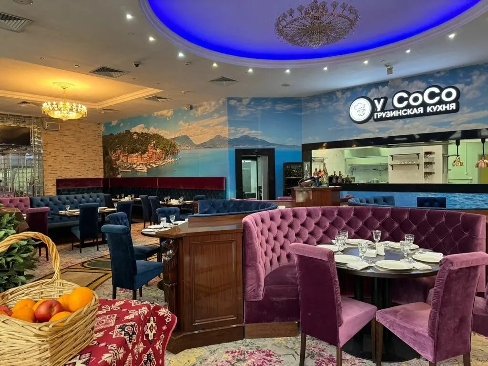
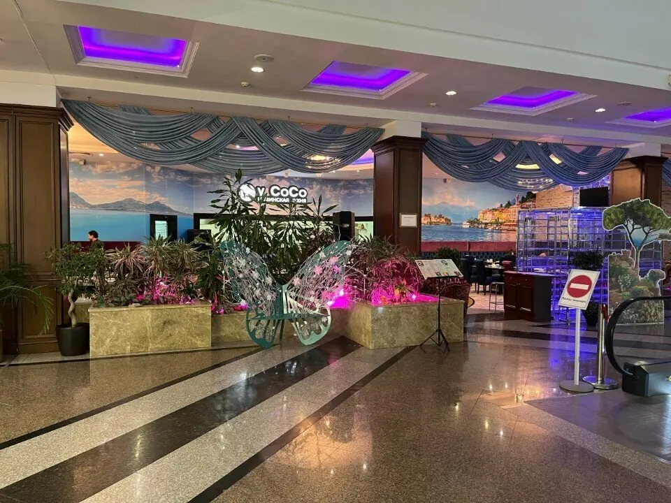
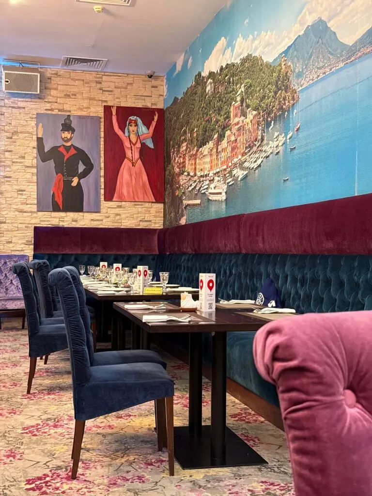

У Сосо
Большой грузинский стол в центре Казани: хинкали, хачапури, живая музыка и танцы, когда настроение совсем хорошее.
5,0 · 799 оценок

Сначала тост, потом хинкали
Кухня от души, официанты всё расскажут и подскажут. Подходит для тихого ужина с семьёй и большого праздника: зал на 100 гостей и живая музыка.
Что подают
Часть меню с Яндекс Карт, цены уточняйте у официанта.
Зал как открытка



Вкусное вино, сочный шашлык, хинкали с телятиной, хачапури по-мегрельски. Всё очень вкусно, сытно.Дарья Мочалова
Очень вкусная грузинская кухня, всё делают с душой.Екатерина Малякова
Очень приятное местечко и очень красивое оформление зала.Лилия Нуриева